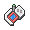

<mat-toolbar color="primary" *ngIf="pageHome">
  <button mat-icon-button class="icon" aria-label="Example icon-button with menu icon" routerLink="/home" >
    <mat-icon>
      
    </mat-icon>
  </button>
  <span>Pokédex</span>
  <span class="spacer"></span>
  <button mat-icon-button class="icon" aria-label="Example icon-button with menu icon" routerLink="/trainer" >
    <mat-icon>
      account_circle
    </mat-icon>
  </button>
  <mat-form-field appearance="outline">
    <mat-label>Search pokémon</mat-label>
    <input matInput placeholder="#id/name" [(ngModel)]="searchInput"/>
    <button matSuffix mat-button (click)="searchPokemon()"><mat-icon>search</mat-icon></button>
  </mat-form-field>
</mat-toolbar>

<mat-toolbar color="primary" *ngIf="!pageHome">
  <button mat-icon-button class="icon" aria-label="Example icon-button with menu icon" (click)="backClicked()">
    <mat-icon>
        chevron_left
    </mat-icon>
  </button>
  <span class="spacer"></span>
</mat-toolbar>
